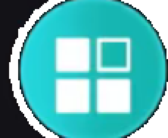
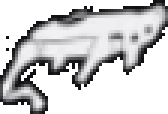
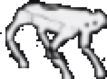
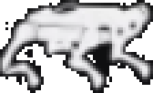
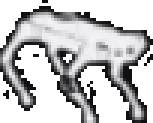
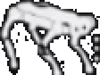

bash /home/linaro/robot_ws/scripts/fix_webops.sh
正在连接狗身相机…






点「设为导航地图」选中下次启动导航要用的图；铅笔进入编辑。
还没有地图 —— 先去「建图」走一圈，停止后点「保存地图」
不要用 eth0 / 交换机 IP 开网页。狗 SDK：192.168.168.168。图传默认走有线 RTSP rtsp://192.168.168.168:8554/test，由主控转成浏览器可播的 MJPEG；留空即用默认代理。
rtsp://192.168.168.168:8554/test